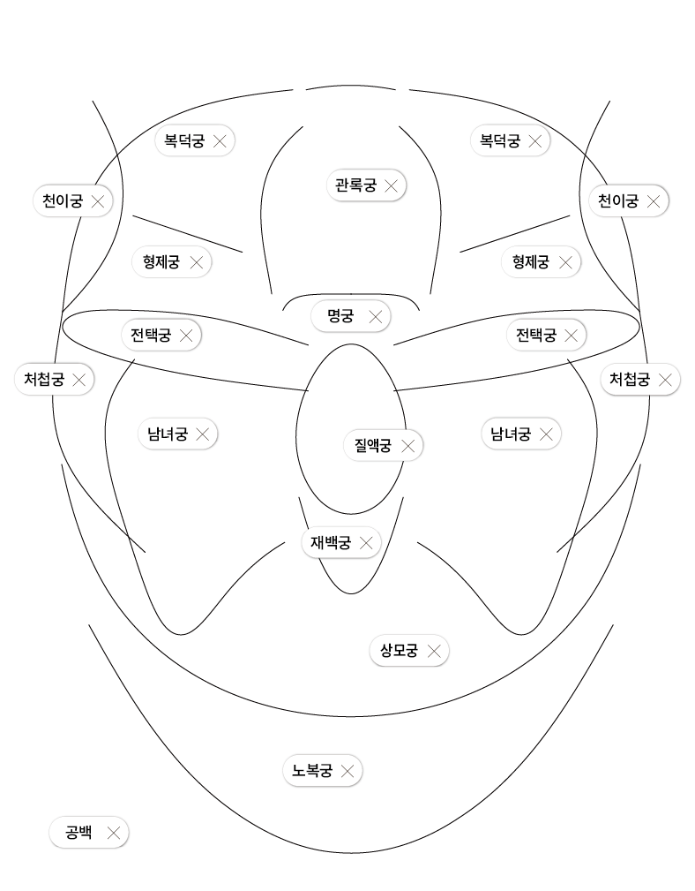

The Flow and Center of Life 삶의 흐름과 중심
십이궁:十二宮
십이궁은 얼굴을 열두 개의 영역으로 나누고, 각 위치마다 삶의 의미를 대응시켜 해석하는 위치 기반의 관상 체계이자 전통적인 관상 이론이다. 열두 영역으로 나뉜 각 부위는 명예, 재물, 관계 등 삶의 다양한 요소로 대응되고 이를 통해 개인의 길흉화복을 해석한다.
십이궁으로 관상을 볼 때는 각 영역의 형태와 색, 윤기의 정도 등을 기준으로 해당 영역이 상징하는 요소의 강약의 정도를 판단한다. 특정 부위가 발달된 경우 해당 영역의 기운이 강한 삶이라 해석되며, 반대로 손상되거나 불균형한 경우는 부정적인 영향이 있다고 해석되기도 한다. 그러나 관상에서 가장 중요한 것은 균형과 조화이기에 십이궁에서도 영역의 균형과 조화를 중시한다.

